Pre-knowledge
什么是独立同分布(i.i.d)？
在概率论与统计学中，独立同分布（英語：Independent and identically distributed，缩写为IID）是指一组随机变量中每个变量的概率分布都相同，且这些随机变量互相独立。
什么是数据集的分布？
- 对于supervised learning，分布是指关于特征$X$和结果$Y$的联合分布$F(X,Y)$或者条件分布$F(Y|X)$。
我们说训练集和测试集服从同分布的意思是训练集和测试集都是由服从同一个分布的随机样本组成的，也就是：
对于unsupervised learning，分布是指特征$X$的分布 F(X)，也就是：
但是现实中比较难做到这点，特别是当训练集是过去的数据，测试集是当下的数据，由于时间的因素，它们很可能不是完全同分布的，这就增加了预测难度。这也是为什么一般交叉验证的误差往往小于实际的测试误差。因为交叉验证中每折数据都是来自训练集，它们肯定是同分布的。如果训练集和测试集的分布风马牛不相及，那么根据训练集学习得到的模型在测试集上就几乎没有什么用了。所以我们训练模型和应用模型时一个重要的前提假设就是训练集和测试集是同分布的。另外一个方面是牵涉到过拟合问题，即使训练集和测试集是同分布的，由于数据量的问题，训练集的分布可能无法完整体现真实分布，当我们过分去学习训练集分布的时候，我们反而会远离真实分布（以及测试集的分布），造成预测不准确，这就造成过拟合。
隐变量（latent variable）
什么是隐变量呢，让我们先简单的说一下，我们估计算法在做的一些事情，我们要做的其实就是估算出概率模型的参数，概率模型是什么呢？你可以简单把它理解成一个分布，甚至说可以把它理解成一个函数，我们的估计算法就是为了求解出这些函数的参数而存在的。
如果你站在这个人旁边，你目睹了整个过程：这个人选了哪个袋子、抓出来的球是什么颜色的。然后你把每次选择的袋子和抓出来的球的颜色都记录下来（样本观察值），那个人不停地抓，你不停地记。最终你就可以通过你的记录，推测出每个袋子里每种球颜色的大致比例。并且你记录的越多，推测的就越准（中心极限定理）。然而，抓球的人觉得这样很不爽，于是决定不告诉你他从哪个袋子里抓的球，只告诉你抓出来的球的颜色是什么。这时候，“选袋子”的过程由于你看不见，其实就相当于是一个隐变量。隐变量在很多地方都是能够出现的。现在我们经常说的隐变量主要强调它的“latent”。所以广义上的隐变量主要就是指“不能被直接观察到，但是对系统的状态和能观察到的输出存在影响的一种东西”。所以说，很多人在研究隐变量。以及设计出各种更优(比如如可解释、可计算距离、可定义运算等性质)的隐变量的表示。
分布变换
通常我们会拿VAE跟GAN比较，的确，它们两个的目标基本是一致的——希望构建一个从隐变量$Z$,生成目标数据$X$的模型，但是实现上有所不同。更准确地讲，它们是假设了$Z$服从某些常见的分布（比如正态分布或均匀分布），然后希望训练一个模型$X=g(Z)$这个模型能够将原来的概率分布映射到训练集的概率分布，也就是说，它们的目的都是进行分布之间的变换。
现在假设$Z$服从标准的正态分布，那么我就可以从中采样得到若干个$Z_1$,$Z_2$,…,$Z_n$, 然后对它做变换得到$hat{x_i} = g(Z_i)$，我们怎么判断这个通过$g$构造出来的数据集，它的分布跟我们目标的数据集分布是不是一样的呢？KL离散度不行，因为KL散度是根据两个概率分布的表达式来算它们的相似度的，然而目前我们并不知道它们的概率分布的表达式，我们只有一批从构造的分布采样而来的数据${\hat{x_i}}$，还有一批从真实的分布采样而来的数据${x_i}$。我们只有样本本身，没有分布表达式，当然也就没有方法算KL散度。
GAN的思路很直接粗犷：既然没有合适的度量，那我干脆把这个度量也用神经网络训练出来吧。
Auto-Encoder
标准自动编码器学会生成紧凑的表示和重建他们的输入，但除了能用于一些应用程序，如去噪自动编码器，他们是相当有限的。自动编码器的基本问题在于，它们将其输入转换成其编码矢量，其所在的潜在空间可能不连续，或者允许简单的插值。
例如，在MNIST数据集上训练一个自编码器，并从2D潜在空间中可视化编码，可以看到不同簇的形成。 这是有道理的，因为每种图像类型的不同编码使得解码器对它们进行解码变得更容易。如果你只是复制相同的图像，这是不错的。但是当你建立一个生成模型时，你不想准备复制你输入的相同图像。你想从潜在的空间随机抽样，或者从一个连续的潜在空间中产生输入图像的变化。
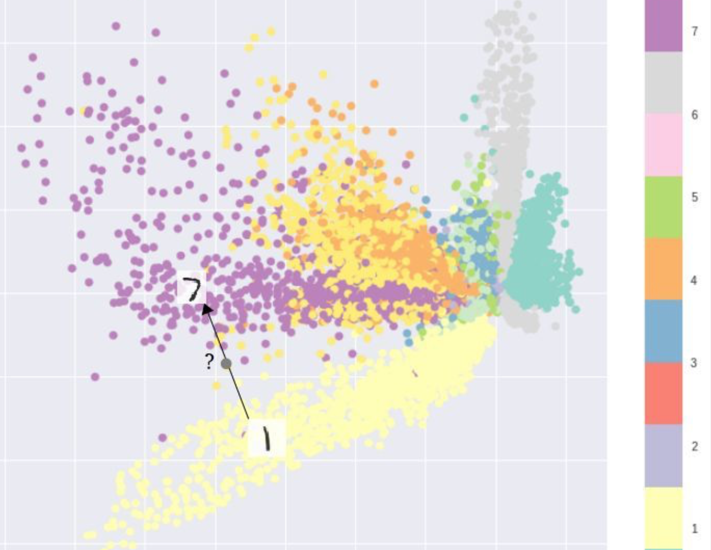
VAE
变分自动编码器（VAEs）具有一个独特的性质，可以将它们与vanilla自动编码器分离开来，正是这种特性使其在生成建模时非常有用：它们的潜在空间在设计上是连续的，允许随机采样和插值。它通过做一些约束来达到这个目的：使编码器不输出大小为n的编码矢量，而是输出两个大小为n的矢量：平均矢量$\mu$和另一个标准偏差矢量$\sigma$。
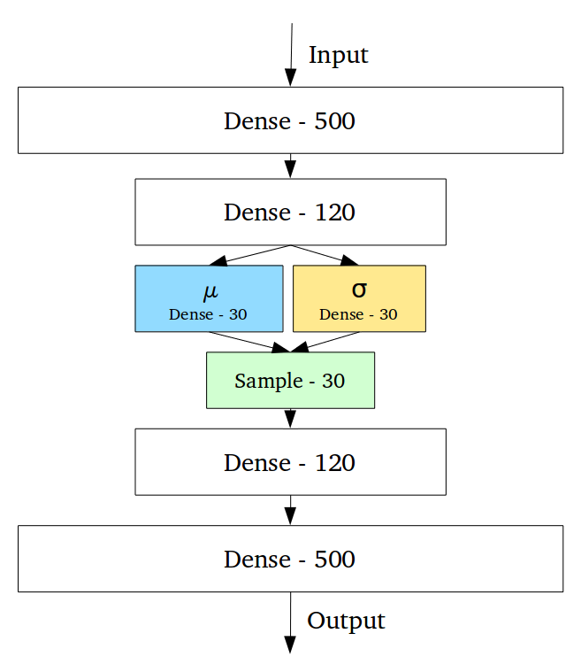
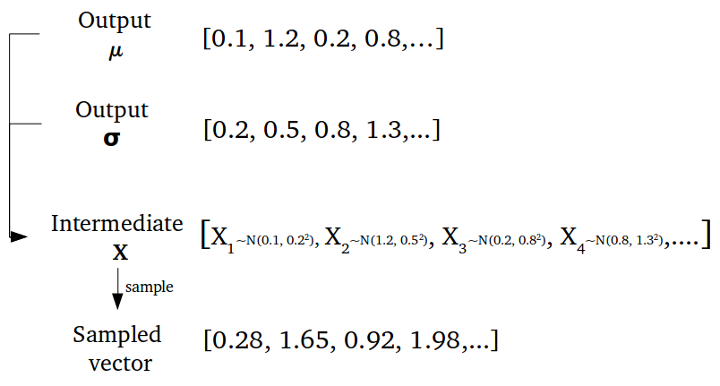
这种随机生成意味着，即使对于相同的输入，虽然平均值和标准偏差保持不变，但是实际编码会在采样过程中发生些许变化。
首先我们有一批数据样本 $\{X_1,\dots,X_n\}$，其整体用 $X$ 表示，我们本想根据$\{X_1,\dots,X_n\}$来得到$X$的分布$P(x)$，如果能得到的话，那我直接根据$P(x)$来采样，就可以得到所有可能的$X$了。这是一个终极理想的生成模型了。当然，这个理想很难实现，于是我们将分布改一改。
此时$p(X|Z)$就描述了一个由$Z$来生成$X$的模型，而我们假设$Z$服从标准正态分布，也就是$p(Z) \sim \mathcal{N}(0,I)$，如果这个理想能实现，那么我们就可以先从标准正态分布中采样一个$Z$，然后根据$Z$来算一个$X$，也是一个很棒的生成模型。接下来就是结合自编码器来实现重构，保证有效信息没有丢失，再加上一系列的推导，最后把模型实现。框架的示意图如下：
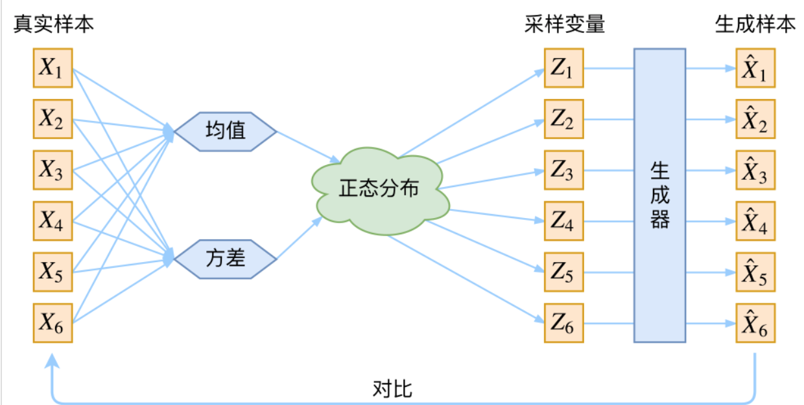
看出了什么问题了吗？如果像这个图的话，我们其实完全不清楚：究竟经过重新采样出来的$Z_k$是不是还对应着原来的$X_k$， 所以我们如果直接最小化$L(\hat{X_k},X_k)$是很不科学的。
其实，在整个VAE模型中，我们并没有去使用$P(z)$（隐变量空间的分布）是正态分布的假设，我们用的是假设$p(Z|X)$后验分布）是正态分布具体来说，给定一个特征$X_K$，我们假设存在一个专属于$X_K$的后验分布$p(Z|X_k)$，并进一步假设这个分布是（独立的、多元的）正态分布。为什么要强调“专属”呢？因为我们后面要训练一个生成器$X = g(Z)$，希望能够把从分布p(Z|x_k)采样出来的一个$Z_k$还原为$X_k$。这时候每一个$X_k$都配上了一个专属的正态分布，才方便后面的生成器做还原。但这样有多少个$X$就有多少个正态分布了。我们知道正态分布有两组参数：均值$\mu$和$\sigma^{2}$（多元的话，它们都是向量），那我怎么找出专属于$X_k$的正态分布$p(Z|X_k)$的均值和方差呢？好像并没有什么直接的思路。那好吧，那我就用神经网络来拟合出来吧！这就是神经网络时代的哲学：难算的我们都用神经网络来拟合。
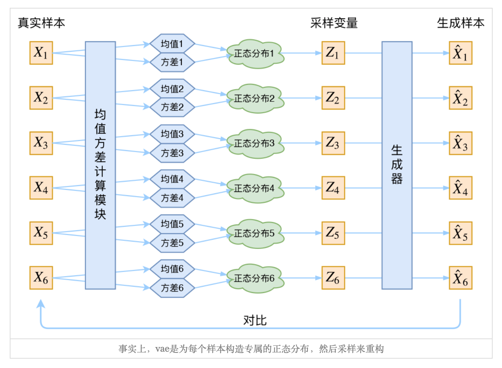
通过这种方法，我们现在将给定输入的每个潜在特征表示为概率分布。当从潜在状态解码时，我们将从每个潜在状态分布中随机采样，生成一个向量作为解码器模型的输入。
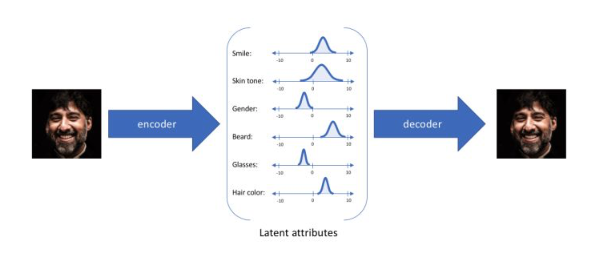
Reparameterization trick
其实很简单，就是我们要从$p(Z|X_k)$中采样一个$z_k$，出来，尽管我们知道了$p(Z|X_k)$是正态分布，但是均值方差都是靠模型算出来的，我们要靠这个过程反过来优化均值方差的模型，但是采样这个操作是不可导的，而采样的结果是可导的。我们利用
$(z-\mu)/\sigma=\varepsilon$是服从均值为0、方差为1的标准正态分布的，要同时把$dz$考虑进去，因为乘上$dz$才是概率，不乘是概率密度。
从 $\mathcal{N}(\mu,\sigma^2)$中采样一个，相当于从$\mathcal{N}(0,I)$中采样一个$\varepsilon$，再让$Z=\mu + \varepsilon \times \sigma$.
于是，我们将从$\mathcal{N}(\mu,\sigma^2)$采样，变化为从$\mathcal{N}(0,I)$中采样，然后通过参数变换得到从$\mathcal{N}(\mu,\sigma^2)$采样的结果。这样一来，“采样”这个操作就不用参与梯度下降了，改为采样的结果参与，使得整个模型可训练了。
Project
Data
For data let’s use MNIST dataset. Pytorch vision module has an easy way to create training and test dataset for MNIST
1 | from torchvision import datasets,transforms |
1 | use_cuda = torch.cuda.is_available() |
1 | BATCH_SIZE = 100 |
Visualization
Before proceeding, let’s visualize some data. For that I am using torchvision.utils.make_grid which creates a grid from multiple images:
1 | def show_images(images): |
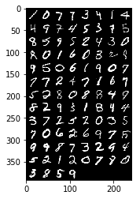
Network Architecture
Similar to deniosing auto encoder, VAE has an encoder and decoder.
Encoder
The encoder encodes an image to a varibale z with normal distribution. For normal distribution we just need to approximate mean m and standard deviation s. Therefore, the role of neural network is to learn a funcion from image to m and s. This implicitly means we are learning a function from image to a probability distribution for z. We implement that function approximator using linear matrix and RELU nonlinearity:
Decoder
The decoder gets the encoded value z, which in theory is reffered to as latent variable, and decodes that value to an image. Therefore, the role of decoder is to learn a function that maps a value of z to a vector of 782 real values. Note that z is in fact a random variable but here we just work with a realization (a.k.a a sampled value) of that random variable
1 | shape = images[0].shape |
1 | class VAE(nn.Module): |
Loss
For doing training we need a loss function. VAE combines two type of losses
- A loss from reconstructing the image. This is simply a Cross Entropy (CE) or Mean Square Error (MSE) between decoded image and original image
- KL divergence: this loss function is for latent variable $Z$,What we like to do is to make $P(z | input)$,as close as possible to standard normal (with mean zero and variance 1). Since $z$ has normal distribution with mean m and variance s. $z ~ N(m, s)$ we can use this simple formula to calculate the loss function of z.
1 | def loss(input_image, recon_image, mu, log_var): |
Train
1 | vae = VAE(40) |
1 | from torchviz import make_dot |
- blue boxes: these correspond to the tensors we use as parameters, the ones we’re asking PyTorch to compute gradients for;
- gray box: a Python operation that involves a gradient-computing tensor or its dependencies;
- green box: the same as the gray box, except it is the starting point for the computation of gradients (assuming the backward()method is called from the variable used to visualize the graph)— they are computed from the bottom-up in a graph.
1 | make_dot(l) |
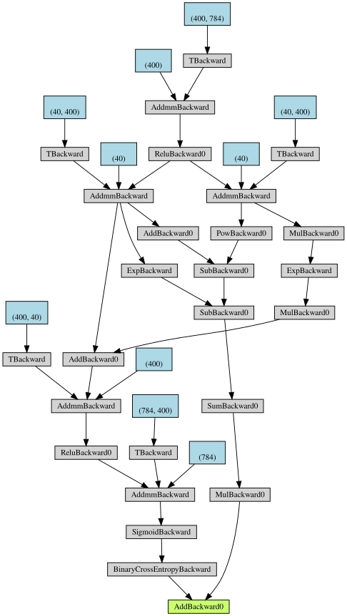
1 | plt.plot(train_loss) |
[<matplotlib.lines.Line2D at 0x11afb1d50>]
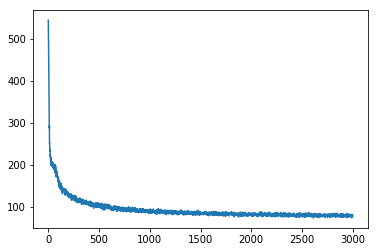
1 | with torch.no_grad(): |
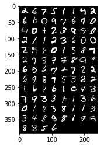
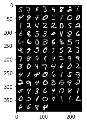
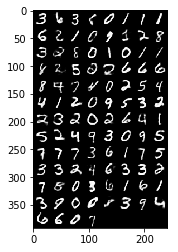
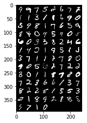
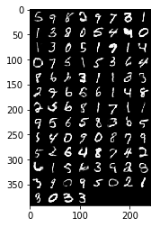
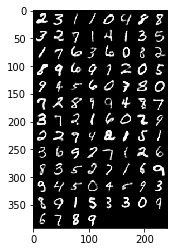
reference https://kexue.fm/archives/5253
http://sofasofa.io/forum_main_post.php?postid=1002963